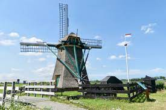

Leiderdorp, Zuid-Holland
Meerburgermolen te Leiderdorp
 De "Meerburgermolen" is een poldermolen uit 1684 en stond tot de zomer van 2007 aan de Meerburgerwetering, nabij de spoorlijn Leiden-Alphen en ten oosten van rijksweg Den Haag-Amsterdam te Zoeterwoude-Rijndijk. Oorspronkelijk bemaalde de molen de Room- en Meerburgerpolder ca. 100 ha. en een opvoerhoogte van 1,05 m. De molen is in 1684 gebouwd door Claes Jansz. van Staveren en Ary Jacobsz voor f. 2175,-. In 1951 werd als hulpaandrijving een dieselmotor op het scheprad geplaatst, maar die is inmiddels ook weer verwijderd. De molen is voorzien van Dekkerwieken en heeft een scheprad buiten de molen en is sinds 1972 eigendom van de Rijnlandse Molenstichting. In 1951 was er een hulpaandrijving met een dieselmotor opgesteld, die door de Molenstichting direct verwijderd werd. Reservemolenaar is hier Frans Verra die samen met anderen meegeholpen heeft aan de tot standkoming van het Gilde van Vrijwillig Molenaars. De molen is op 30-08-2007 van zijn plaats gehaald en als tussenstation naar de werf van molenmaker Verbij in Hoogmade gebracht. Hier stond hij tot 26 september 2013 met één roe in afwachting van plaatsing in de Munnikkenpolder te Leiderdorp. Ondertussen moest dit gebied opnieuw worden ingericht en de fundering en watergangen worden aangelegd. De molen is op 12 juli 2014 weer in gebruik genomen.